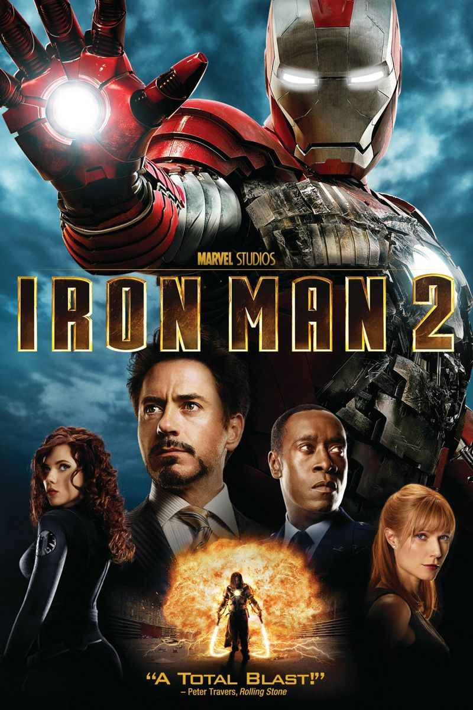

|  |
Movie Name: |
Iron Man 2 (2010) |
|
In Russia, the media covers Tony Stark's disclosure of his identity as Iron Man. Ivan Vanko, whose father Anton Vanko has just died, sees this and begins building a miniature arc reactor similar to Stark's. Six months later, Stark is a superstar and uses his Iron Man suit for peaceful means, resisting government pressure to sell his designs. He reinstitutes the Stark Expo to continue his father Howard's legacy. The palladium core in the arc reactor that keeps Stark alive and powers the armor is slowly poisoning him, and he cannot find a substitute. Growing increasingly reckless and despondent about his impending death, and choosing not to tell anyone about his condition, Stark appoints his personal assistant Pepper Potts CEO of Stark Industries, and hires Stark employee Natalie Rushman to replace her as his personal assistant. Stark competes in theMonaco Historic Grand Prix, where he is attacked in the middle of the race by Vanko, who wields electrified whips. Stark dons his Mark V armor and defeats Vanko, but the suit is severely damaged. Vanko explains his intention was to prove to the world that Iron Man is not invincible. Impressed by Vanko's performance, Stark's rival, Justin Hammer, fakes Vanko's death while breaking him out of prison and asks him to build a line of armored suits to upstage Stark. During what he believes is his final birthday party, Stark gets drunk while wearing the Mark IV suit. Disgusted, U.S. Air Force Lieutenant Colonel James Rhodes dons Stark's Mark II prototype armor and tries to restrain him. The fight ends in a stalemate, so Rhodes confiscates the Mark II for the U.S. Air Force. Nick Fury, director of S.H.I.E.L.D., approaches Stark, revealing "Rushman" to be Agent Natasha Romanoff and that Howard Stark was a S.H.I.E.L.D. founder whom Fury knew personally. Fury explains that Vanko's father jointly invented the arc reactor with Stark, but when Anton tried to sell it for profit, Stark had him deported. The Soviets sent Anton to the gulag. Fury gives Stark some of his father's old material; a hidden message in the diorama of the 1974 Stark Expo proves to be a diagram of the structure of a new element. With the aid of his computer J.A.R.V.I.S., Stark synthesizes it. When he learns Vanko is still alive, he places the new element in his arc reactor and ends his palladium dependency. At the Expo, Hammer unveils Vanko's armored drones, led by Rhodes in a heavily weaponized version of the Mark II armor. Stark arrives in the Mark VI armor to warn Rhodes, but Vanko remotely takes control of both the drones and Rhodes' armor and attacks Iron Man. Hammer is arrested while Romanoff and Stark's bodyguard Happy Hogan go after Vanko at Hammer's factory. Vanko escapes, but Romanoff returns control of the Mark II armor to Rhodes. Stark and Rhodes together defeat Vanko and his drones. Vanko seemingly commits suicide by blowing up his suit. |
||